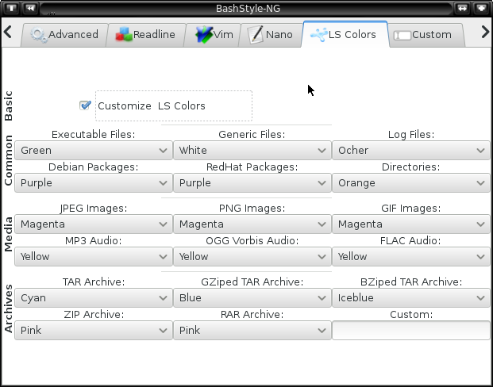

Chapter 11: LS Colors

11.1 Customize LS Colors:
LS_COLORS defines which color is used by `ls' for a given filetype.
Use the comboboxes to adjust the color for common filetypes.
11.2 Custom:
Change the LS_COLORS for anything not mentioned in the UI.
Syntax: * File = color (see 11.3 for correct usage!) :
Example: `*README=01;31:', will result in README files being red.
11.3 Colors:
Use the following values for colors for 11.2:
List of styles:
- bold 01
- normal 0
- inverted 7
- dimmed 02
- underlined 04
List of colors:
- black style;38;5;0
- red style;38:5;1
- green style;38;5;2
- yellow style;38;5;3
- blue style;38;5;4
- magenta style;38;5;129
- cyan style;38;5;6
- white style;38;5;7
(Note: the following colors might be incompatible with your Terminal!)
- coldblue style;38;5;33
- smoothblue style;38;5;111
- iceblue style;38;5;45
- turqoise style;38;5;50
- smoothgreen style;38;5;42
- winered style;38;5;637
- brown style;38;5;684
- silver style;38;5;761
- ocher style;38;5;690
- orange style;38;5;714
- purple style;38;5;604
- pink style;38;5;213
- cream style;38;5;5344